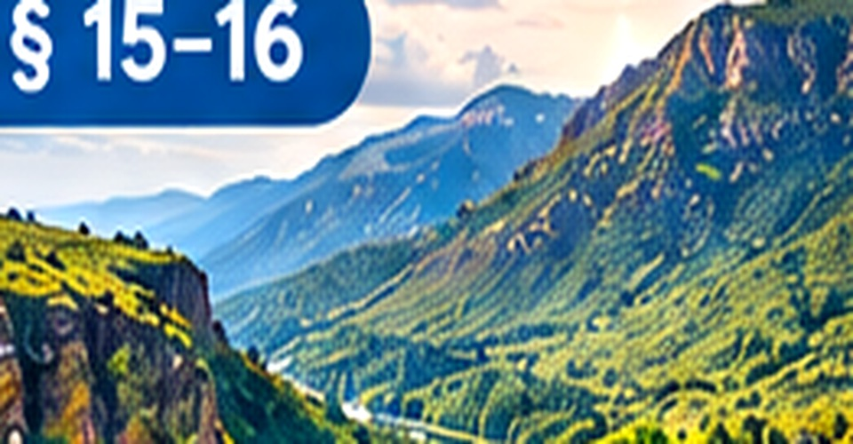
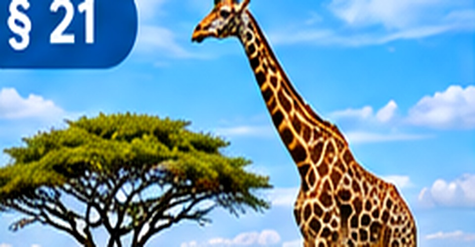
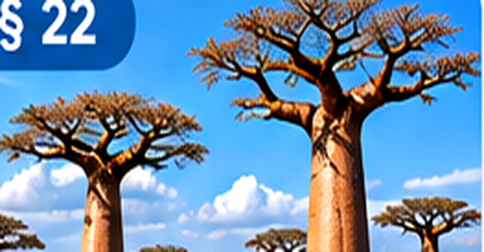
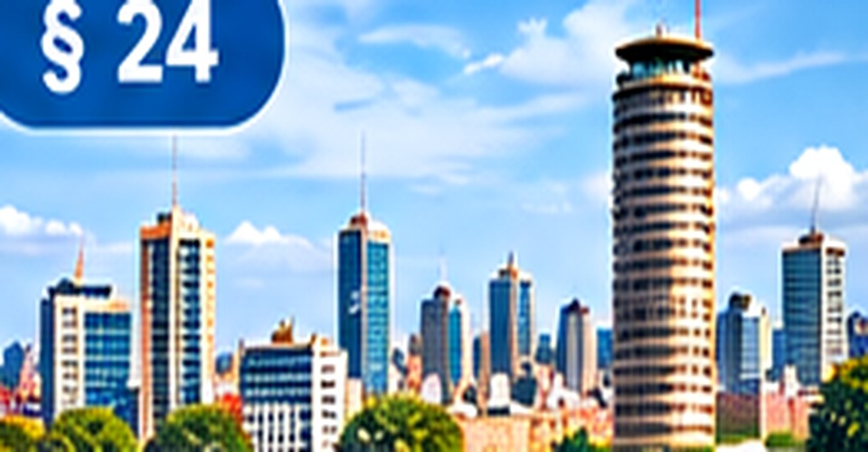
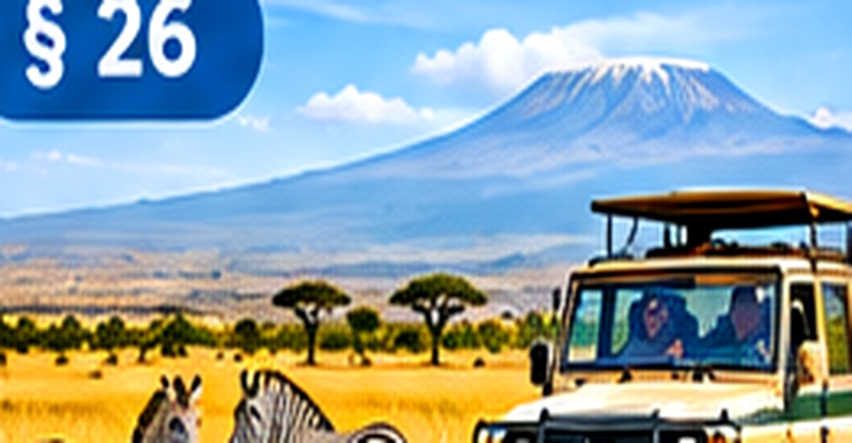
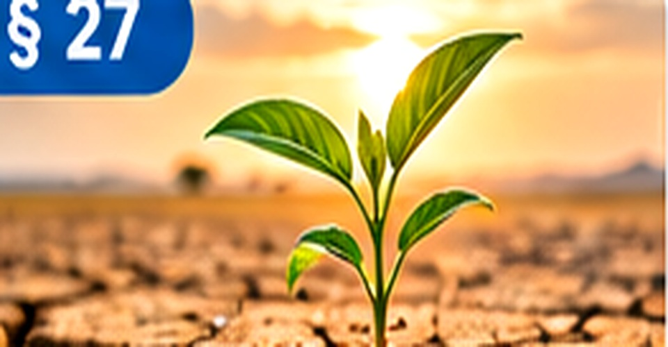

Наші уроки / 7 клас / Географія
🌍 Географія · 7 клас
Листопад — грудень · 10 інтерактивних уроків за § 15–27. Досліджуйте географічні закономірності, аналізуйте дані, виконуйте практичні й компетентнісні завдання, формулюйте власні висновки.
У кожному уроці: коротка теорія, інтерактивні дослідження, завдання з перевіркою, відкрита відповідь та підсумковий звіт.

Урок 1 · § 15–16Вертикальна поясність у горах. Азональні природні комплекси. Типи водних масДослідіть, як змінюються природні умови з висотою.Відкрити урок → Урок 2 · § 17–18Кількість і густота населення Землі. Природні чинники розселенняПорівняйте показники й поясніть особливості розселення.Відкрити урок →
Урок 2 · § 17–18Кількість і густота населення Землі. Природні чинники розселенняПорівняйте показники й поясніть особливості розселення.Відкрити урок →
 Урок 3 · § 19–20Природні чинники у формуванні людської цивілізаціїПроаналізуйте вплив природного середовища на життя людей.Відкрити урок →
Урок 3 · § 19–20Природні чинники у формуванні людської цивілізаціїПроаналізуйте вплив природного середовища на життя людей.Відкрити урок →

Урок 4 · § 21Африка: географічне положення та берегова лініяДослідіть розташування материка й особливості його берегів.Відкрити урок →
Урок 5 · § 22Африка: тектонічна будоваЗ'ясуйте зв'язок геологічної будови з особливостями материка.Відкрити урок → Урок 6 · § 23Африка: рельєф і корисні копалиниЗіставте форми рельєфу та розміщення ресурсів.Відкрити урок →
Урок 7 · § 24Африка: загальні риси кліматуДослідіть кліматичні закономірності та їх причини.Відкрити урок → Урок 8 · § 25Африка: води суходолуПоясніть розміщення річок та озер материка.Відкрити урок →
Урок 8 · § 25Африка: води суходолуПоясніть розміщення річок та озер материка.Відкрити урок →

Урок 9 · § 26Африка: природні зониПорівняйте природні комплекси й умови їх формування.Відкрити урок →
Урок 10 · § 27Африка: розселення населення та екологічні проблемиЗапропонуйте обґрунтовані рішення реальних проблем.Відкрити урок →